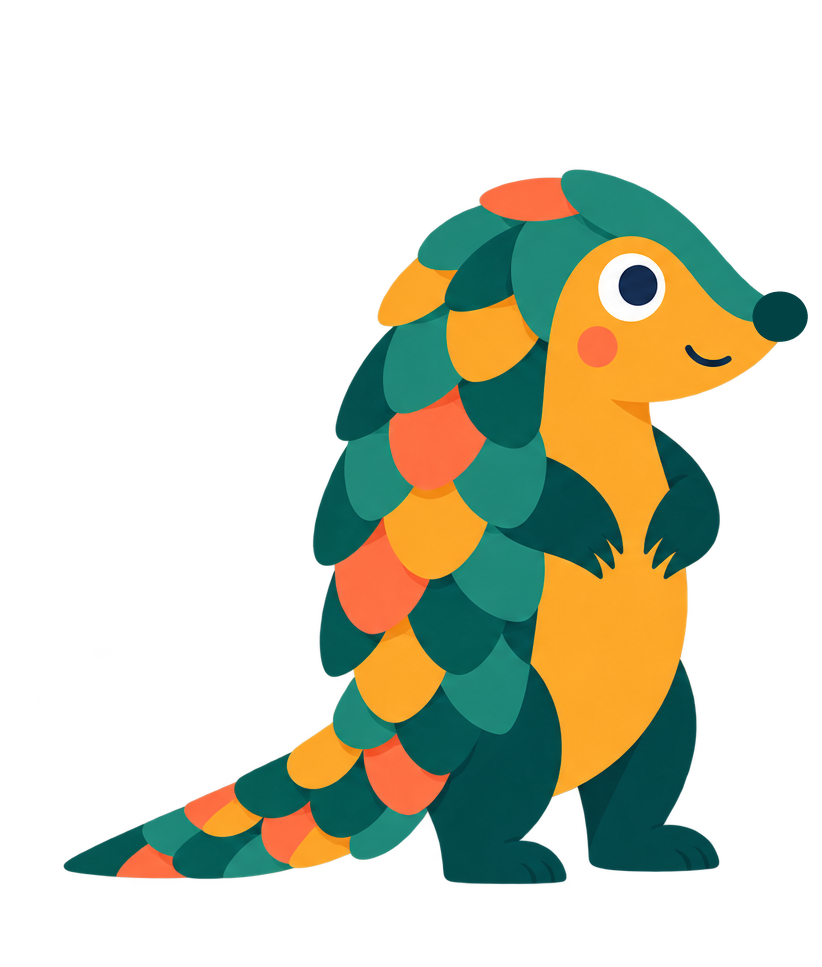

Prekínder a 6° básico
Super Poder
Un programa integral que entrega a niños y niñas herramientas de autocuidado y protección, mientras fortalece a las familias y docentes para construir entornos seguros y protectores.
- Charla para apoderados
- Taller para docentes
- Jornadas pedagógicas para niños y niñas